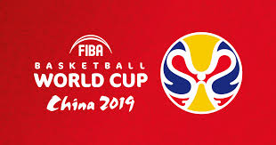

ここではworld cupやオリンピックなどのバスケの世界大会について書いていこうと思います。
FIBAバスケットボール・ワールドカップ（FIBA Basketball World Cup）は、4年に一度、夏季オリンピックの中間年に開催されるFIBA（国際バスケットボール連盟）主催の男子の公式戦の一つ。
2010年大会まではバスケットボール世界選手権（FIBA World Championship）という名前だった。
2014年大会から現在のようなワールドカップという名称に変わった。
※名前が変わっただけで大会の内容自体は今まで通りの世界バスケと同じである。
なお、優勝国にはネイスミス・トロフィーが贈られる。
競技方式
出場国の数は何度も変更が行われているが、現在世界選手権に出場できるのは全部で32ヶ国であり、オリンピック（12カ国）を規模で上回る
開催国と、各大陸における予選を勝ち抜いた上位チームが出場することができる
出場できるチームの数の各大陸の内訳はFIBAランキングを元に決定される。
試合方式1次リーグで32チームが8組に分かれ、各組2位までの16チームが2次リーグへ。さらに上位2チームが準々決勝に進む（2019年大会）。
日本における放送体制
・日本が出場した1998年大会はWOWOWで中継が行われた。
・また2006年日本大会は地上波にはTBSテレビからJNN系列独占放送で日本戦を、またCS衛星放送・スカイパーフェクTV!（パーフェクト・チョイスでの無料放送）では全試合を放映した。
・2010年トルコ大会は2011年までのFIBA主催試合中継権を獲得したJ SPORTSが中継。
・2013年から4年契約でフジテレビが放送権を取得。フジテレビNEXTで中継。2017年にはさらに4年間契約更新。>